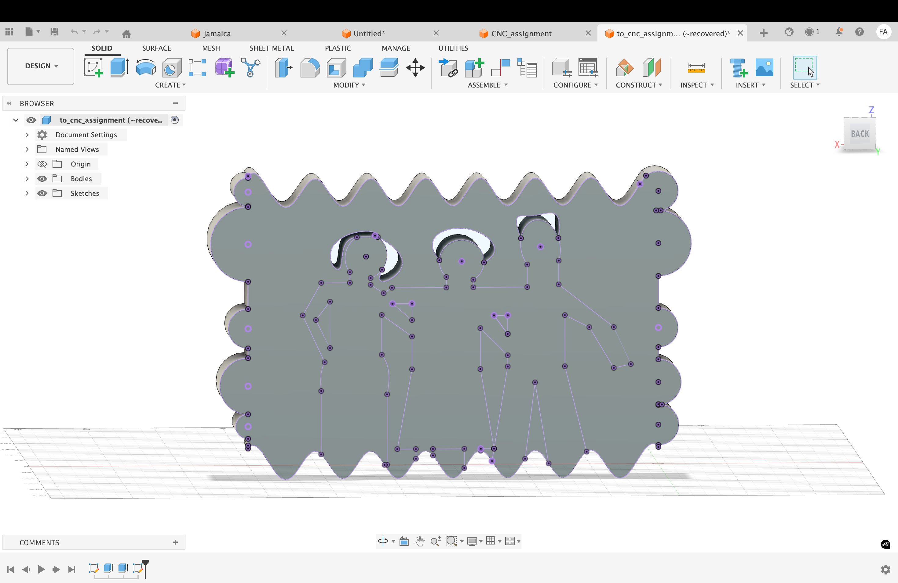
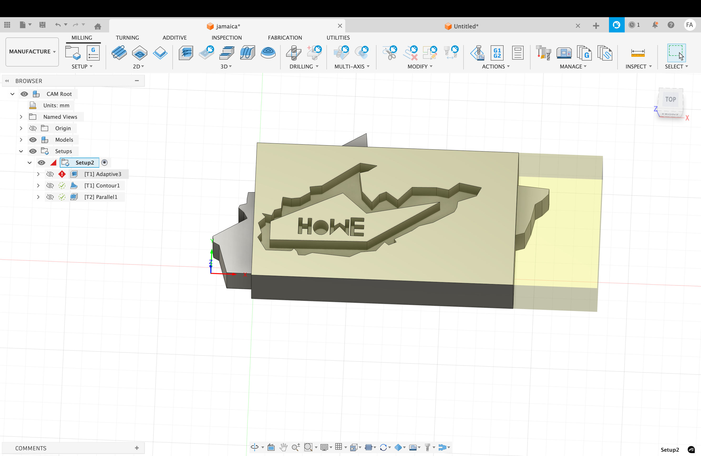
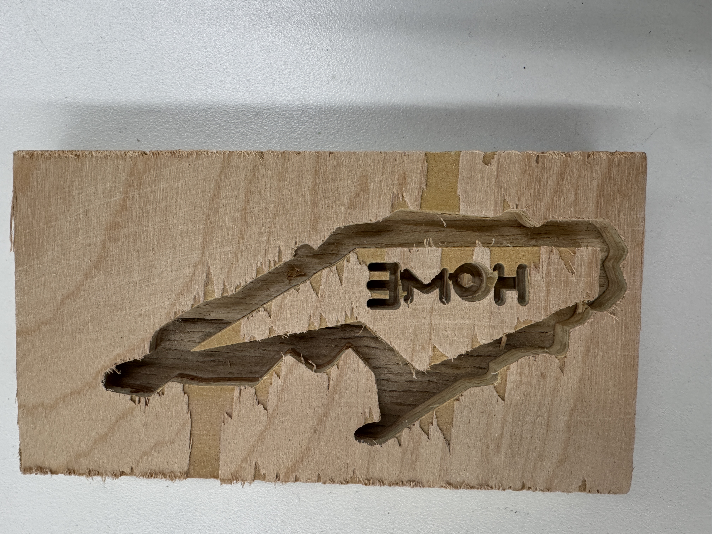
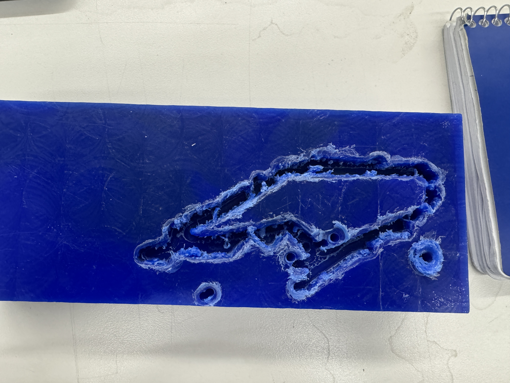
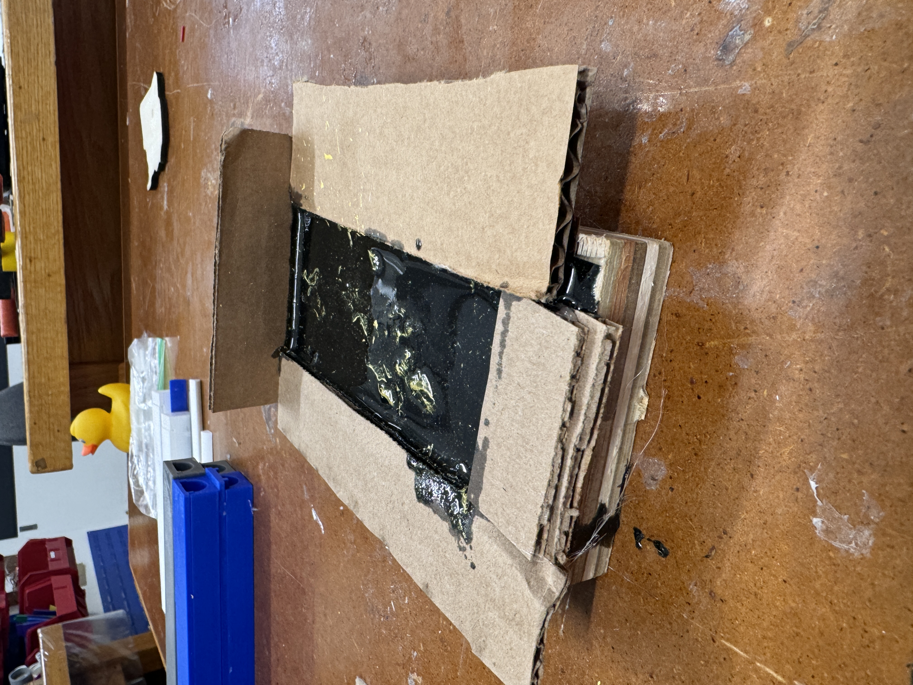

<div class="textcontainer">
<p class="margin"> </p>
<h3>Week 8: CNC Milling</h3>
<h4>Assignment: Make Something With CNC</h4>
For this assignment. I wanted to make a carved wood frame. I designed with Fusion 360 how I wanted it, but unfortunately - I used not very efficient way to add features of fit point sline in fusion. I uploaded the sketch dxf with Aspire but I wasn't able to crave it since it turns out the frame wasn't closed. It was hard to figure out where exacly needed closing since I was able to extrude the shape...shameless to say I still don't know why we (with help of a ca) couldn't get to cut out the wood and make a nice photo frame.
<p></p>
</br>
From here, it turned to be my friend's birthday week -- so I got inspiration of craving Jamaica's map. It was hoenstly not so fun to design this...I wish there was an app/website to give dxfs of outlines instead of having to do it by hand.
I must say this was my least favorite week because something was always wrong. The manufacturing couldn't work because some toolpath couldn't generate (error still unknown):((
<p></p>
<p>Finally...I used the same design to use shopbot instead since it was more promising as it didn't require processing with Fusion. This worked ok, but there were still unexpected turnouts. When cutting out material, i didn't take into consideration that I needed to take cut out material from the top in the carving process since I needed to cast later. I will attach a picture for intuition on what happened. </p>
<p></p>
Before this I actually was to use wax, which didn't stick on the ground and I just had random holes all around since the wax was moving on the platform
<p></p>
With all that happened, I managed to cast something by adding thickness to the ends of the wood design.
<p></p>
<p> The cast was made out of resin and added some color after the mix to get the desired colors of beautiful Jamaica. Results are to be uploaded soon:))</p>
</div>